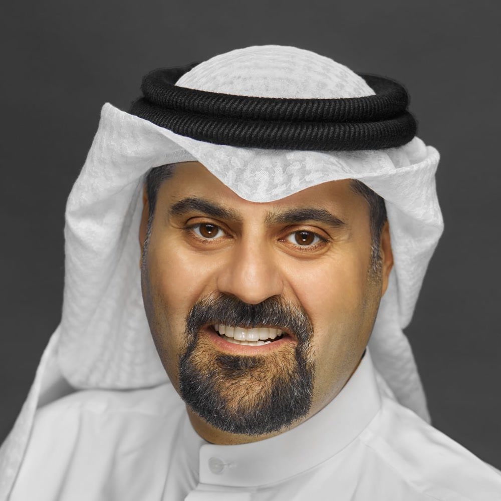

أنظمة الذكاء الاصطناعي
وكلاء وسير عمل للإنتاج — لا عروضًا للمسرح.

حمود المناور
مؤسس · مشغّل
منظور عالمي. مقيم في الكويت.
أبحث عمّا ينجح، وأشارك الأحكام، وأبني أنظمة يمكن تشغيلها فعليًا.
المجالات
أربعة مسارات. حلقة واحدة: تحقّق ← ابنِ ← اشرح ← وسّع ما يستحق.
وكلاء وسير عمل للإنتاج — لا عروضًا للمسرح.
أنظمة تكرارية تقلّل الإرهاق وتُبقي الحكم.
أسطح منتجات يمكن الاعتماد عليها مع الزمن.
مشاريع مركّزة لها سبب واضح لوجودها.
أدلة · أدوات · أطر
أدلة مراجعة يفترض أن تبقى أطول من منشور عابر. آليات وأرقام ومتى تُستخدم.
سطر إعداد واحد يحوّل السياق المتكرّر من السعر الكامل إلى عُشر الكلفة.
دليلوجّه الطلبات غير العاجلة عبر Batch بدل الواجهة القياسية — نفس الطلب بنصف السعر.
بحثتقييمات AISI البريطانية على GLM-5.2 وDeepSeek-V4-Pro — أين الفجوة بالأشهر، وأين لا تزال قائمة.
أعمال عامة
أدوات عامة موثّقة فقط — المشكلة / ما بُني / النتيجة / التعلّم.
تحريري
أحكام أطول — أمن ووكلاء وملاحظات تشغيل تستحق الحفظ.
أين تفصل الأشهر بين النماذج — وأين تبقى الفجوة في المهام الأصعب.
خلاصة القياس: اختر النموذج حسب شكل المهمة لا الولاء للعلامة.
منشورات موثقة عن أمن MCP وحقن الموجّهات والأتمتة وحلقات الشحن — مجمّعة في مكان واحد.
حيث يتحول العمل إلى شركات
حمود هو المؤسس والمشغّل. VentraM وFANN هما المشروعان. التنفيذ التجاري ← VentraM. المنتج المستقل ← FANN.
تحقّق ← ابنِ ← وسّع. للعمل التجاري المؤهّل في الأنظمة، توجّه إلى VentraM.
← زيارة VentraMموقع حي (وصول تأسيسي): سوق موثّق للفن المادي — سجلات مصدر أولًا، ملكية بشهادة، وعوائد إعادة البيع. قدّم لدفعة التأسيس على tryfann.com.
← زيارة FANNمؤسس ومشغّل
أبني وأختبر أنظمة التقنية، ثم أشرح ما يصمد. الكويت قاعدة؛ والعمل عالمي. الخليج سوق مهم ومنظور — لا حدّ للهوية.
هذا الموقع طبقة المؤسس والمشغّل: أحكام عامة وأدلة وأدوات. المشاريع تحت هذه الطبقة — VentraM للتنفيذ التجاري، وFANN كمنتج مستقل.
التسلسل: حمود (المؤسس) ← المشاريع (VentraM، FANN).
تابع العمل
القنوات الاجتماعية للأحكام والعمل العام. واتساب لملاحظات المؤسس. VentraM للتنفيذ التجاري المؤهّل.
الباب التجاري
أنظمة العمل التجاري المؤهّلة — الذكاء الاصطناعي والأتمتة والمنصات وبناء المشاريع — تتجه إلى VentraM. تحقّق ← ابنِ ← وسّع.